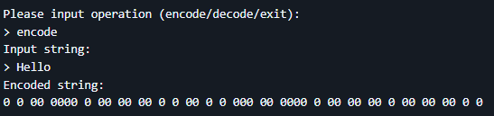
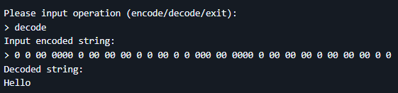
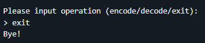

«Un esercizio di logica e minimalismo: codificare il testo con zeri e spazi»
Genere: Programma da riga di comando, cifratura unaria
Linguaggi utilizzati: Java
Link: github.com/mmilasi/chuckNorrisCipherEncoder
Questo progetto nasce come esercizio di programmazione per implementare il cosiddetto "Chuck Norris Cipher", un
sistema di codifica unario che trasforma il testo in sequenze di zeri e spazi. L'obiettivo è esplorare la
manipolazione delle stringhe e la logica binaria attraverso un'interfaccia testuale semplice e diretta.
Il programma offre tre funzionalità principali:


